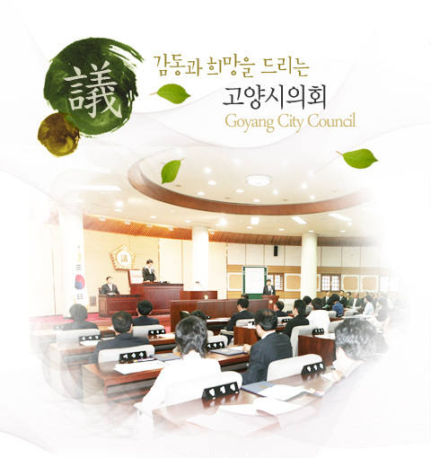
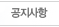
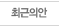
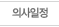
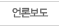
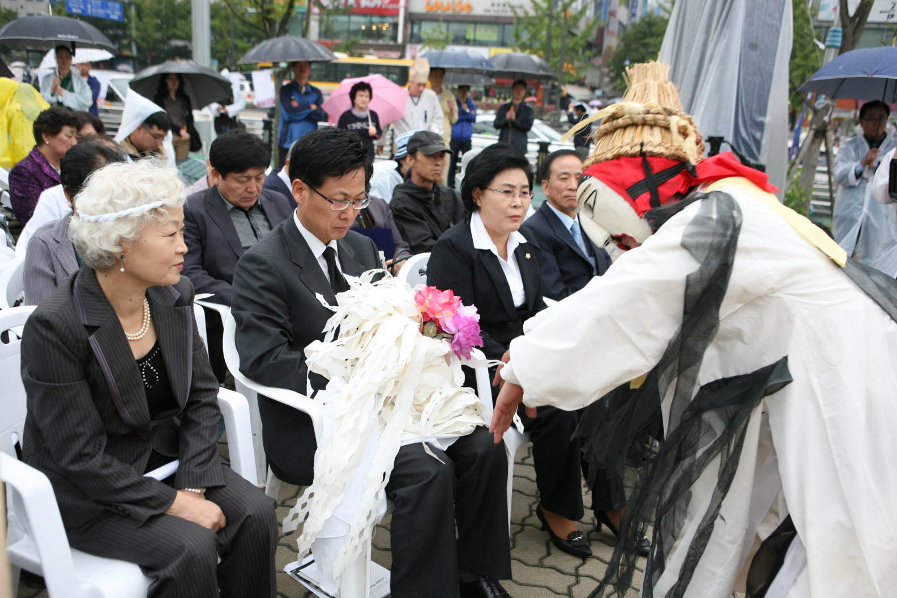
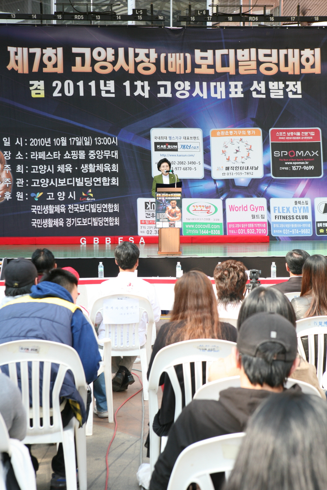
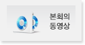
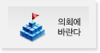
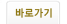

주메뉴 바로가기
본문 바로가기
주메뉴 바로가기
탑메뉴
주메뉴
의회연혁
조직/구성
의회기능
의원윤리강령
찾아오시는길

검색
게시판 미리보기

2010-12-21
2011년도 연간 의회 운영 기본계획
2010-12-21
고양의정소식지 편집위원 모집 공고
2010-12-21
158회 고양시의회 임시회 세부 의사일정
2010-12-21
제158회 고양시의회(임시회) 집회공고

2010-12-22
고양시 새마을이동도서관 운영에 관한 조례 일...
2010-12-22
고양시 정신보건센터 설치 및 운영에 관한 조...
2010-12-22
고양시 일자리창출위원회 설치 및 운영 조례안...
2010-12-22
고양시 경로당 지원 조례안

2010-12-23
제158회 고양시의회(임시회)
2010-12-23
제157회 고양시의회(임시회)
2010-12-23
제156회 고양시의회(임시회)
2010-12-23
제155회 고양시의회(제2차정례회)

2010-12-24
고양시의회, 친환경무상급식 원년! 급식현장...
2010-12-24
김필례 의장, 어르신들 배식도우미 봉사
2010-12-24
고양시 의회, 우리 고장 역사의 길을 가다!
2010-12-24
고양시의회, 주민기피시설대책특별위원회 활동...
제 7의 고양시

제 60주기 고..

제5회자원봉..
인기 메뉴


퀵메뉴
